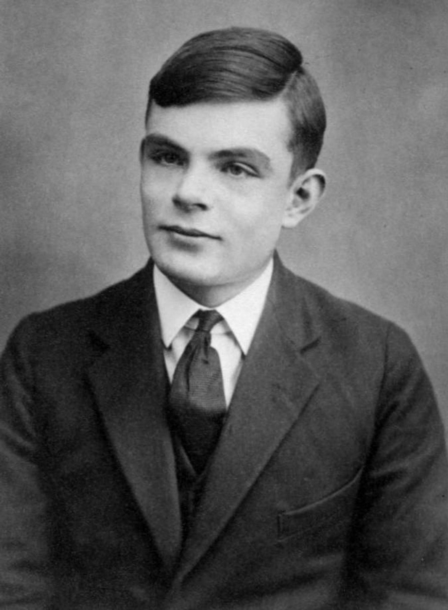
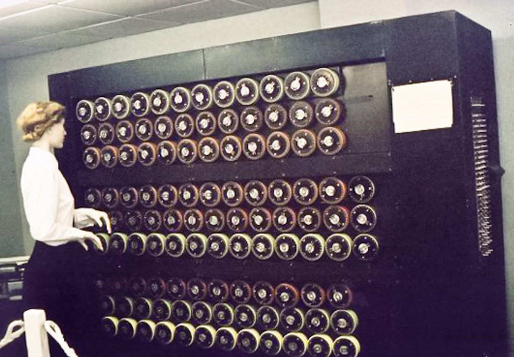
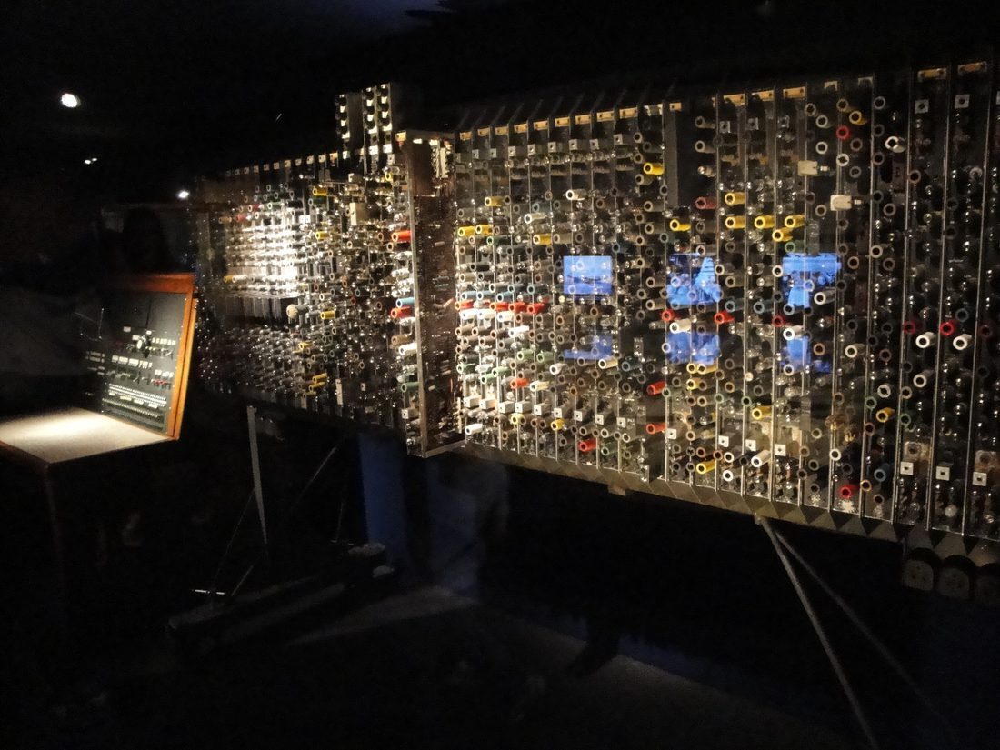
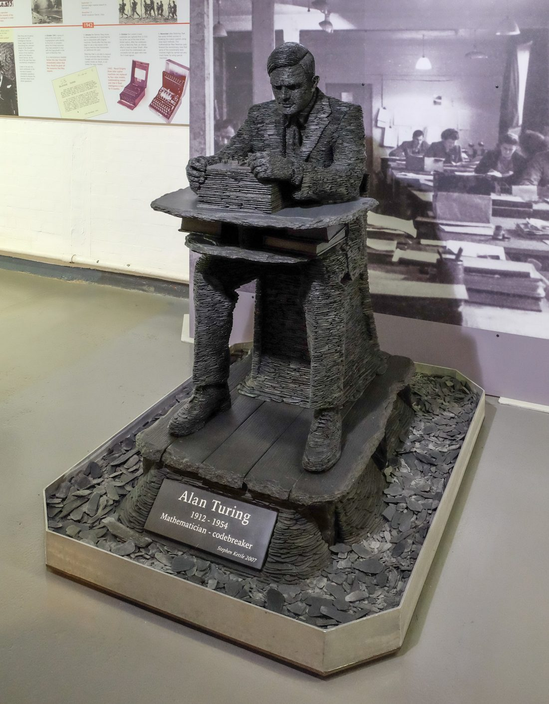
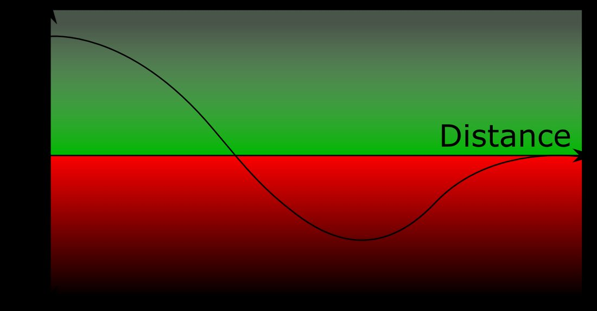

1912
生于伦敦

6 月 23 日，图灵出生。他后来成为计算机科学与人工智能的理论奠基人。
1931
剑桥求学

他进入剑桥大学国王学院，研习数学与数理逻辑，打下理论根基。
1936
图灵机论文
发表《论可计算数》，提出图灵机，并证明停机问题不可判定。
1938
普林斯顿博士
他在普林斯顿获博士学位，进一步锤炼了逻辑与计算的理论。
1939
投身破译
二战爆发，他进入布莱切利园，领导德军恩尼格玛密码的破译。
1940
炸弹机

他设计的炸弹机大规模加速密钥搜索，成为破译的关键装备。
1945
设计 ACE

战后他参与设计早期的存储程序计算机 ACE，把理论变成实机。
1950
图灵测试

他发表论文提出“模仿游戏”，开创人工智能的思想实验。
1952
形态发生研究

他发表反应—扩散模型，用数学解释生物体上的斑纹与条纹。
1954
英年辞世
6 月 7 日，图灵去世，享年 41 岁。后世尊他为计算机与 AI 之父。
读图灵机：计算的“最小模型” → 读可计算性：有些问题算不出 → 读破译恩尼格玛：密码的战争 → 读机器能思考吗？图灵测试 →